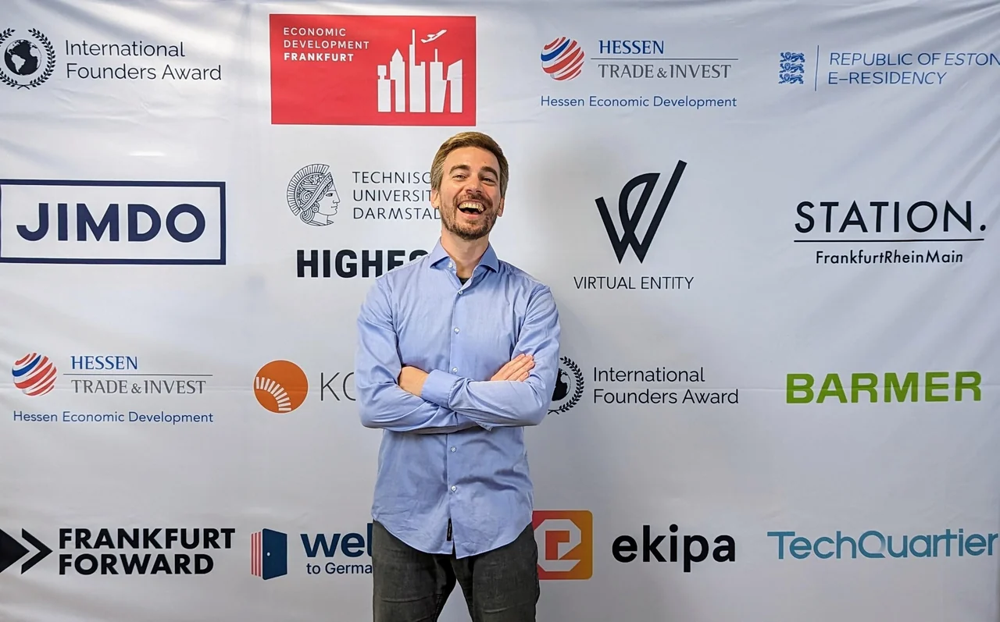
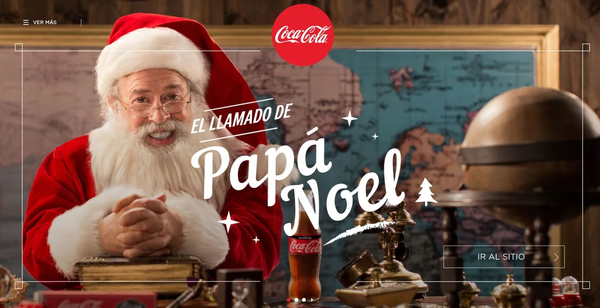

Dynamic Visuals
Personalised data-driven imagery rendered across banking & consumer lifecycles.*
I’m Frank Escudero. For nearly three decades I’ve worked where bare-metal engineering meets human wonder—writing software since 1996, wiring autonomous river vessels in workshops, running a private ~6 PFLOPS AI cluster over 185 Gbps RDMA, and operating platforms that have spoken to tens of millions of people by name.
No agency theatre, no slide-deck consulting. One season it’s running the international Coca-Cola Digital Christmas platform across 17 countries for six consecutive years; the next, cutting an enterprise VoIP bill by 94%, advising presidential campaigns, or mentoring emerging engineers through InkuA, the borderless non-profit I founded in 2021.

01 / Cumulative Scale
Chronological CVs bury the signal. Here is the cumulative output across three decades of production infrastructure, global consumer peaks, banking pipelines, and security audits.
Personalised data-driven imagery rendered across banking & consumer lifecycles.*
Individualised video stories synthesized on custom distributed render pipelines.*
Automated & real-time SIP voice interactions routed across international carriers.*
Cut carrier run-rate from €9.0M to <€0.5M/yr via bare-metal SIP architecture.*
Multi-node local GPU fabric interconnected at 185.2 Gbps & 1.4 µs latency.
Offensive & architectural assessments, including 10+ banking & government systems.
Production applications, live telemetry control planes, and executive analytics suites.
Advised national candidates in Argentina, Bolivia, and Costa Rica on data & comms.
Managed, engineered, and operated the international “Santa’s Call / El Llamado de Papá Noel” digital holiday experience on my own full-stack video-synthesis and carrier SIP telephony platform—absorbing massive December traffic spikes across two continents without missing Christmas Eve.


*Cumulative media volumes, multi-country campaign totals, and VoIP cost reduction (€9.0M/yr to <€0.5M/yr) are owner-reported career totals. Not independently audited.
Personalised customer lifecycle video & dynamic newsletters at multi-million scale.
Automated communication pipelines & data-driven account holder journeys.
High-volume client communications & secure cross-channel delivery.
Six-country Centurion Cup recognition & personalised cardmember onboarding.
Enterprise client communications & automated visual rendering.
Interactive digital onboarding & customer retention engines.
Multi-country executive incentives & 320k+ card placement tracking.
High-throughput mobile messaging for mass-market financial inclusion.
100% digital neobank customer acquisition & onboarding flows.
High-value contract lifecycle & personalised policyholder touchpoints.
02 / The Non-Profit Profile
In 2021 I founded InkuA in Germany as a borderless civic non-profit—giving emerging developers, designers, and students real production software teams, open-source mentorship, and applied AI workshops instead of paywalls.
Builders across Latin America and Europe stepping up to ship collaborative software.
Practising engineers, psychologists, and educators mentoring cross-functional squads.
Distributed teams learning agile delivery, code review, and resilient systems together.
Invited speaker on cybersecurity & institutional preparedness at the Erasmus+ workshop in Brussels.
Whether on stage in Frankfurt am Main or in European civil-protection workshops in Brussels, InkuA’s premise stays simple: the fastest way to change someone’s trajectory is to trust them with a real problem alongside people who care.
Read Official European SETOFF Workshop Press Release (PDF) ↗
03 / Visual Dossier
From the 17-country Coca-Cola Christmas platform and a 185 Gbps private AI fabric to boat hulls on a workbench, RED cinema sets, and InkuA stages.


04 / Direct Line
Whether it’s bare-metal AI infrastructure, a system that has to stay standing under millions of users, or a civic non-profit initiative worth fighting for—write directly. Discreet by default; primary architecture references shared peer-to-peer.